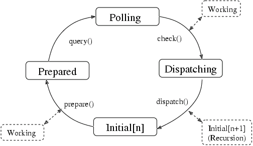
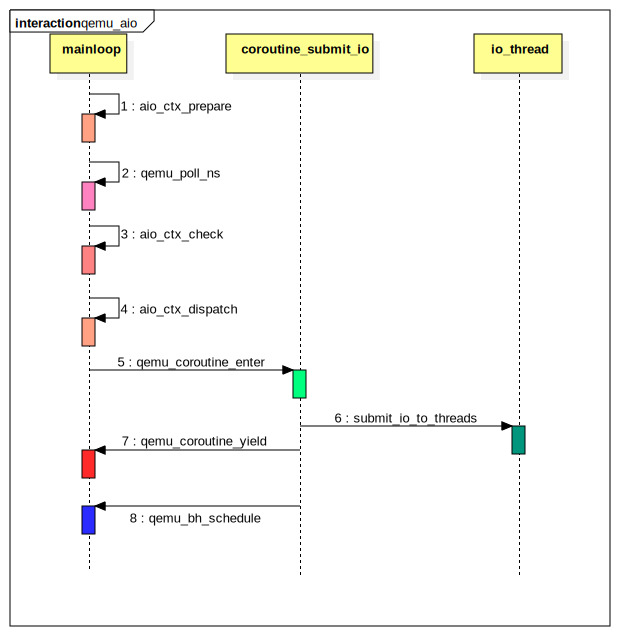
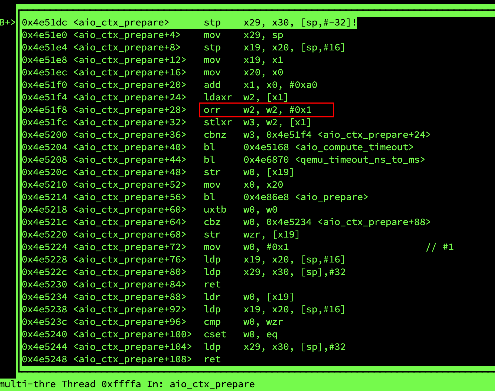
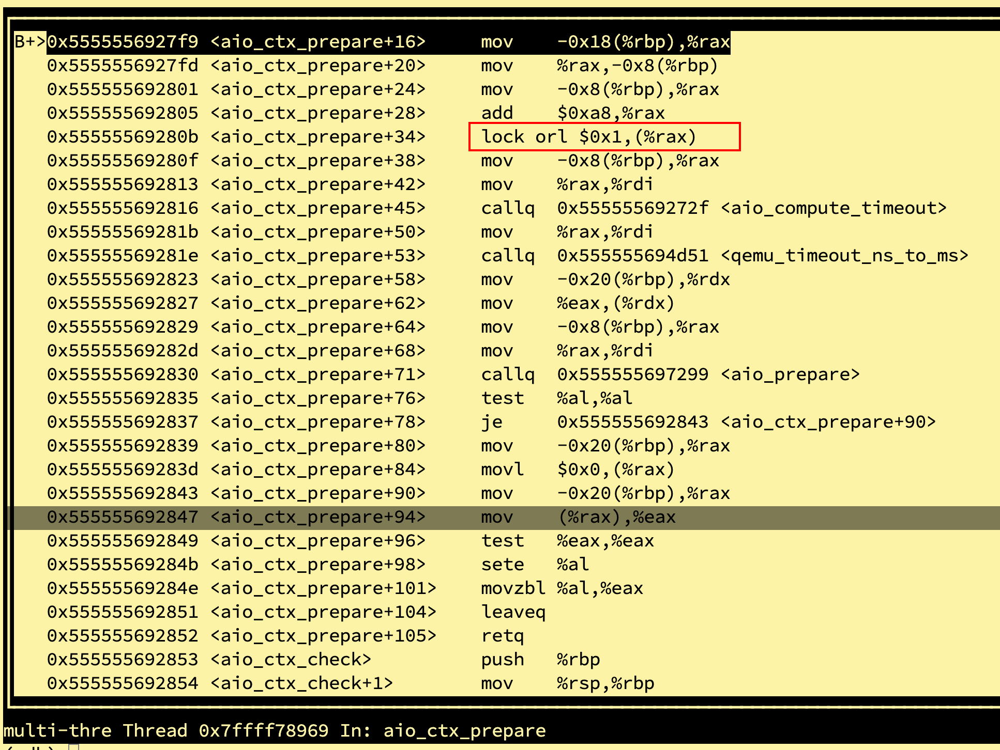

最近openEuler在HDC 2020上宣布开源了，采用开源社区的运作模式开发和发布版本。 openEuler对Huawei鲲鹏系列CPU（基于ARM架构）提供了良好的支持， 开始陆续被国内私有云厂商开始采用，希望openEuler能够成长起来成OS业界的明星。
在前期我们的测试环境中发现在使用qemu-img做镜像格式转换的时候偶然会发现 qemu主线程会出现hung的情况。奇怪的是这个现在只在aarch64平台上出现， 在x86平台上我们没有复现出来，当时也没太在意但后来被平安科技的技术人员测出来了反馈给我们开始引起了我们的注意。 通过我们的分析，再加上和社区的讨论发现这个问题其实是 隐藏在qemu AIO机制中的一个典型smp多线程共享变量直接的同步问题， 究其根因是一个不同体系结构上内存模型不同从而导致代码行为不一致的问题。 （注：一开始我们以为是编译器优化导致局部指令被重排了，后来发现并不是） 通过对这个问题的分析和探讨，可以有助于进一步理解了smp架构上内存模型和其的重要性。 这里分析和记录一下这个问题。
问题复现方法很简单，采用下面的测试命令即可：
COUNT=0
while true
do qemu-img convert -f qcow2 origin.qcow2 -O output.qcow2
COUNT=$(expr $COUNT + 1)
echo "do image convert times = $COUNT"
done
我们向qemu社区提交了bugzilla，但qemu社区也没有就这个问题达成一个结论， 社区讨讨论连接是：
https://lists.gnu.org/archive/html/qemu-arm/2019-10/msg00051.html
使用gdb调试出错现场发现IO请求已经完成（THREAD_DONE）， 但主线程却没有感知到，从而导致主线程一直处poll循环监听pipe事件中(AIO完成事件)， 造成了主线程hang住的假象，没有办法正常退出了。
(gdb) p *(ThreadPoolElement*)0xaaab002707e0
$6 = { common = {aiocb_info = 0xaaaacfd6e250 <thread_pool_aiocb)info>,bs = 0x0,
cb=0xaaaacfcd128<thread_pool_co_cb>, opaqueue = 0xffff90cef828,
refcnt = 1, pool = 0xaaab002a4000, func = 0xaaaacfc607e4 <aio_worker>,
state = THREAD_DONE,
}
}
要定位这个文问题，必须先分析一下qemu aio机制的执行逻辑。 qemu aio基于glib2的mainloop事件循环机制， mainloop主要分为prepare, polling, check, disptch四个阶段状态，状态机如下图：

Step1：首先是prepare阶段， 当上一次IO处理完成之后，qemu主线程会执行aio_ctx_prepare进入prepare阶段， 在prepare阶段会先把ctx->notify_me置1（表示我下面可能要睡眠了，有IO完成了请主动通知我）， 然后通过aio_compute_timeout计算下次poll的超时时间。 该函数会去检查所有的bottom half（包括定时器和监听的file descriptor） 综合判断是否有已经下发的IO（通过bh->flags BH_SCHEDULED的值来确定），是否有定时器事件到来， 是否有fd状态改变（可读、可写）从而算出一个timeout时间。
- 若有需要立刻下发的IO直接返回0，表示下次poll的超时时间为0，即不管eventfd的pipe中是否有事件都会直接退出polling阶段， 立刻dispatch一次（调用aio_ctx_check和dispatch阶段去下发IO）。
- 若有bh被schedule（flags|BH_SCHEDULED）但这是个idle任务则休眠10ms再poll。
- 若没有IO需要处理，则返回timeout的值为-1，这时候主线程会一直poll等待eventfd通知到来。
Step2：prepare后进入poll阶段 poll阶段会监听glib_pollfds_fill添加的那些fd，一直等到fd状态发生变化（可读、可写） 或者prepare阶段设定的超时时间到达就进入到check阶段。
Step3：check阶段调用aio_ctx_check将ctx->notify_me置成0，
并清除ctx->notifier标志，然后遍历整个bh列表如果发现有bh的flags|BH_SCHEDULED返回true，
或者aio_pending满足、定时器超时满足也返回true，表示可以下发一次IO执行操作了。
Step4：dispatch阶段给IO worker线程下发IO操作， 执行具体任务的函数是aio_dispatch。 这个阶段会调用bh的callback，执行最终的IO操作。
整个AIO的处理流程大概可以用下面的UML活动图表示：

针对这个问题我们要重点看下ctx_aio_prepare函数和qemu_bh_schedule这两个函数。
static gboolean
aio_ctx_prepare(GSource *source, gint *timeout)
{
AioContext *ctx = (AioContext *) source;
atomic_or(&ctx->notify_me, 1);
/* We assume there is no timeout already supplied */
*timeout = qemu_timeout_ns_to_ms(aio_compute_timeout(ctx));
if (aio_prepare(ctx)) {
*timeout = 0;
}
return *timeout == 0;
}
int64_t
aio_compute_timeout(AioContext *ctx)
{
BHListSlice *s;
int64_t deadline;
int timeout = -1;
timeout = aio_compute_bh_timeout(&ctx->bh_list, timeout);
if (timeout == 0) {
return 0;
}
QSIMPLEQ_FOREACH(s, &ctx->bh_slice_list, next) {
timeout = aio_compute_bh_timeout(&s->bh_list, timeout);
if (timeout == 0) {
return 0;
}
}
deadline = timerlistgroup_deadline_ns(&ctx->tlg);
if (deadline == 0) {
return 0;
} else {
return qemu_soonest_timeout(timeout, deadline);
}
}
static int64_t aio_compute_bh_timeout(BHList *head, int timeout)
{
QEMUBH *bh;
QSLIST_FOREACH_RCU(bh, head, next) {
if ((bh->flags & (BH_SCHEDULED | BH_DELETED)) == BH_SCHEDULED) {
if (bh->flags & BH_IDLE) {
/* idle bottom halves will be polled at least
* every 10ms */
timeout = 10000000;
} else {
/* non-idle bottom halves will be executed
* immediately */
return 0;
}
}
}
return timeout;
}
前面提到prepare阶段调用ctx_aio_prepare来计算下一次polling的超时时间， 实际调用了aio_compute_timeout计算超时时间，注意： 这里会先将notify_me置1然后再计算超时时间，而需要额外注意的是notfiy_me是一个共享变量(其实ctx都是共享的)。 aio_ctx_prepare执行在主线程的上下文，所以这就涉及到共享变量的barrier同步问题。
附：aio_ctx_prepare的执行callstack为：
#0 aio_ctx_prepare (source=0x555555780070, timeout=0x7fffffffdbf4) at util/async.c:250
#1 0x00007ffff7eb6d1a in g_main_context_prepare () from /lib64/libglib-2.0.so.0
#2 0x0000555555695d4e in glib_pollfds_fill (cur_timeout=0x7fffffffdcc8) at util/main-loop.c:191
#3 0x0000555555695ec0 in os_host_main_loop_wait (timeout=-1) at util/main-loop.c:232
#4 0x000055555569600f in main_loop_wait (nonblocking=0) at util/main-loop.c:518
#5 0x0000555555577e89 in convert_do_copy (s=0x7fffffffdea0) at qemu-img.c:2043
#6 0x0000555555579332 in img_convert (argc=7, argv=0x7fffffffe1d0) at qemu-img.c:2555
#7 0x000055555557f3b8 in main (argc=7, argv=0x7fffffffe1d0) at qemu-img.c:5116
void qemu_bh_schedule(QEMUBH *bh)
{
aio_bh_enqueue(bh, BH_SCHEDULED);
}
static void aio_bh_enqueue(QEMUBH *bh, unsigned new_flags)
{
AioContext *ctx = bh->ctx;
unsigned old_flags;
/*
* The memory barrier implicit in atomic_fetch_or makes sure that:
* 1. idle & any writes needed by the callback are done before the
* locations are read in the aio_bh_poll.
* 2. ctx is loaded before the callback has a chance to execute and bh
* could be freed.
*/
old_flags = atomic_fetch_or(&bh->flags, BH_PENDING | new_flags);
if (!(old_flags & BH_PENDING)) {
QSLIST_INSERT_HEAD_ATOMIC(&ctx->bh_list, bh, next);
}
aio_notify(ctx);
}
void aio_notify(AioContext *ctx)
{
/* Write e.g. bh->scheduled before reading ctx->notify_me. Pairs
* with atomic_or in aio_ctx_prepare or atomic_add in aio_poll.
*/
smp_mb();
if (ctx->notify_me) {
event_notifier_set(&ctx->notifier);
atomic_mb_set(&ctx->notified, true);
}
}
提示：bh是一个任务推迟执行的机制，IO线程里调用aio_bh_new创建一个bh，然后在要下发IO的时候调用qemu_bh_schedule， 将BH_SCHEDULE置1告诉下发IO者这个下半部可以执行了。
下一步分析qemu_bh_schedule流程，熟悉bh机制的都应该知道qemu_bh_schedule是在IO线程上下文。 其代码中首先通过原子操作xchq将BH_SCHEDULED标志位置为1， 告诉调度者（这里是主线程）这个bh可以开始下发执行了。 若之前BH_SCHEDULED为0则调用aio_notify通知主线程， 而aio_notify()中又会判断ctx->notify_me是否为0， 只有当其不为0时候才会写ctx->event_notifier。 值得注意的是： 在这里aio_notify的时候要通过判断notify_me来决定是否 发送ctx->event_notifer事件通知给主线程。 然而这里notify_me是个多线程之间的共享变量，作为判断条件会影响代码的分支执行！
创建8个协程：
#0 qemu_bh_schedule (bh=0x555555793b60) at util/async.c:181
181 aio_bh_enqueue(bh, BH_SCHEDULED);
(gdb) bt
#0 qemu_bh_schedule (bh=0x555555793b60) at util/async.c:181
#1 0x0000555555693b48 in spawn_thread (pool=0x555555780800) at util/thread-pool.c:158
#2 0x0000555555693f4c in thread_pool_submit_aio (pool=0x555555780800, func=0x5555555f9a7d <handle_aiocb_rw>, arg=0x7ffff70949d0,
cb=0x555555693fc2 <thread_pool_co_cb>, opaque=0x7ffff7094920) at util/thread-pool.c:262
#3 0x0000555555694072 in thread_pool_submit_co (pool=0x555555780800, func=0x5555555f9a7d <handle_aiocb_rw>, arg=0x7ffff70949d0)
at util/thread-pool.c:288
#4 0x00005555555fab23 in raw_thread_pool_submit (bs=0x55555578d3f0, func=0x5555555f9a7d <handle_aiocb_rw>, arg=0x7ffff70949d0)
at block/file-posix.c:1894
#5 0x00005555555fac23 in raw_co_prw (bs=0x55555578d3f0, offset=0, bytes=104, qiov=0x7ffff7094e00, type=1) at block/file-posix.c:1941
#6 0x00005555555fac73 in raw_co_preadv (bs=0x55555578d3f0, offset=0, bytes=104, qiov=0x7ffff7094e00, flags=0) at block/file-posix.c:1948
#7 0x00005555556072e9 in bdrv_driver_preadv (bs=0x55555578d3f0, offset=0, bytes=104, qiov=0x7ffff7094e00, qiov_offset=0, flags=0) at block/io.c:1116
#8 0x0000555555608181 in bdrv_aligned_preadv (child=0x55555577f900, req=0x7ffff7094bd0, offset=0, bytes=104, align=1, qiov=0x7ffff7094e00,
qiov_offset=0, flags=0) at block/io.c:1492
#9 0x0000555555608a73 in bdrv_co_preadv_part (child=0x55555577f900, offset=0, bytes=104, qiov=0x7ffff7094e00, qiov_offset=0, flags=0)
at block/io.c:1733
#10 0x00005555556088ab in bdrv_co_preadv (child=0x55555577f900, offset=0, bytes=104, qiov=0x7ffff7094e00, flags=0) at block/io.c:1691
#11 0x0000555555606b8b in bdrv_rw_co_entry (opaque=0x7ffff7094d50) at block/io.c:908
#12 0x0000555555606c62 in bdrv_prwv_co (child=0x55555577f900, offset=0, qiov=0x7ffff7094e00, is_write=false, flags=0) at block/io.c:938
#13 0x0000555555606f6d in bdrv_preadv (child=0x55555577f900, offset=0, qiov=0x7ffff7094e00) at block/io.c:1001
#14 0x0000555555606ffa in bdrv_pread (child=0x55555577f900, offset=0, buf=0x7ffff7094ee0, bytes=104) at block/io.c:1018
#15 0x00005555555b752d in qcow2_do_open (bs=0x555555785cb0, options=0x55555578b190, flags=0, errp=0x7fffffffda00) at block/qcow2.c:1258
#16 0x00005555555b8d24 in qcow2_open_entry (opaque=0x7fffffffd970) at block/qcow2.c:1796
#17 0x00005555556b6599 in coroutine_trampoline (i0=1434005424, i1=21845) at util/coroutine-ucontext.c:115
结合场景进一步分析：
qemu-img 进行covert格式转换的时候创建了8个协程来并发处理转换操作，
协程创建好之后主线程执行main_loop_wait，协程负责处理镜像转换的具体工作（发起AIO请求）。
结合问题调试发现，通过aio_notify()和aio_compute_timeout()中tracelog， 我们发现io thread已经完成io请求，且调用了qemu_bh_schedule设置bh->flags BH_SCHEDULED为1， 但是主线程好像并没有看到BH_SCHEDULED被置1，或者还有一种情况是主线程在并发执行aio_ctx_prepare 的时候并没有先将notify_me置1而是直接调用了aio_ctx_compute_timeout此时却计算timeout值为-1， 导致直接即后续主线程会一直处于poll等待事件的fd从而导致主线程hang住的假象。
为了验证这个猜测，我们在aio_ctx_prepare里面加了个memory barrier发现问题就没有复现了， 于是发了一个patch到社区讨论：
https://lists.gnu.org/archive/html/qemu-devel/2020-04/msg00204.html
问题的讨论点聚焦在qemu用共享变量进行线程间通信，问题场景为：
When using C11 atomics, non-seqcst reads and writes do not participate
in the total order of seqcst operations. In util/async.c and util/aio-posix.c,
in particular, the pattern that we use
write ctx->notify_me write bh->scheduled
read bh->scheduled read ctx->notify_me
if !bh->scheduled, sleep if ctx->notify_me, notify
needs to use seqcst operations for both the write and the read. In
general this is something that we do not want, because there can be
many sources that are polled in addition to bottom halves. The
alternative is to place a seqcst memory barrier between the write
and the read. This also comes with a disadvantage, in that the
memory barrier is implicit on strongly-ordered architectures and
it wastes a few dozen clock cycles.
根据Paolo Bonzini的回复和总结，这个问题可以简化为一个smp编程场景下 多线程之间共享变量的一个同步模型：
- aio_ctx_prepare里面：主线程写
notify_me，然后又读取bh->flags | BH_SCHEDULE的值来判是休眠还是处理bh； - io worker线程写bh->flags的BH_SCHEDULE标志位，然后又读取
notify_me来判断是否唤醒主线程。
Yes, that's what I expected too when I wrote that code. :( But Torvald
Riegel explained a while ago that seq-cst accesses are actually weaker
than e.g. the Linux kernel atomics[1].
The difference basically only matters if you are writing the relatively
common synchronization pattern
write A write B
smp_mb() smp_mb()
read B read A
if not B then sleep if A then wake up the other side
do something
because you must either use memory barriers as above, or use seq-cst
writes *and* reads. You cannot rely on having a memory barrier implicit
in the writes.
Paolo
[1] https://lists.gnu.org/archive/html/qemu-arm/2019-10/msg00051.html
在这个模型下面，主线程和io worker线程之间的执行逻辑去取决于共享变量notify_me
和bh->flags | BH_SCHEDULE的值，两个线程之间又各自会写对方需要的分支判断条件，
这样就存在一种竞争关系，作者在写代码的时候认为atomic_or或者atomic_and这类API函数
在执行的时候会加barrier，保证代码执行的顺序逻辑（注意是从另外一个线程的角度去看），
但不幸的是实际上并没有。为了验证这一点，我们在aarch64环境上对aio_ctx_prepare进行反汇编：

从反汇编可以看出，atomic_or这里对应一条orr指令，后面并没有添加任何barrier指令(dmb或者dsb指令)，
也就是说aio_ctx_prepare中并不能保证smp环境下多线程之间的指令顺序执行。
atomic_or(&ctx->notify_me, 1);
/* We assume there is no timeout already supplied */
*timeout = qemu_timeout_ns_to_ms(aio_compute_timeout(ctx));
所以这问题的根源在于：
aarch64环境上的smp多线程场景下，线程间使用了共享变量 （这里为例提升qemu aio的性能，主线程和IO线程之间使用共享变量方式进行同步， 并没有采用互斥锁、条件变量、信号量等重量级同步方式来保证） 可能会导致一些意想不到的结果，单独的用户态原子操作并不能保证smp多线程之间 代码的执行顺序，只有在代码分支条件判断的关键点显式添加memory barrier才能 保证代码的执顺序！！！
为什么这个bug在x86上不出现而在aarch64上出现可以高概率复现？ 猜测是aarch64和x86上内存模型不同导致的结果。 （注意：编译器barriers只能够防止代码被编译器优化，并不能防止指令在执行的时候被CPU重新排列）
从ARMv8的PG文档可以看到aarch46使用的是一种weakly-ordered model of memory内存模型。 通俗的讲就是处理器实际对内存访问（load and store）的执行序列和program order不一定保持严格的一致， 处理器可以对内存访问进行reorder（可以参考：http://www.wowotech.net/armv8a_arch/__cpu_setup.html）。 所以，很明显aarch64和x86的内存模型是很大不同的。
ARMv8A PG Chapter 13. Memory Ordering
The ARMv8 architecture employs a weakly-ordered model of memory. In general terms, this means that the order of memory accesses is not required to be the same as the program order for load and store operations. The processor is able to re-order memory read operations with respect to each other. Writes may also be re-ordered (for example, write combining) .As a result, hardware optimizations, such as the use of cache and write buffer, function in a way that improves the performance of the processor, which means that the required bandwidth between the processor and external memory can be reduced and the long latencies associated with such external memory accesses are hidden.
这里对x86环境上的aio_ctx_prepare进行反汇编得到的结果是：

可以看到x86上是一条lock orl指令，查询资料x86使用Total Store Order内存模型：
lock prefix guarantee that result of instruction is immediately globaly visible.
发现lock前缀是锁总线，可以保证执行操作立刻全局可见，难道这里顺带这里可以起到内存屏障的作用？
更新一下最新进展，Paolo Bonzini已经开始发patch了，针对weakly-ordered内存模型体系结构修改了一些内容：
https://patchwork.kernel.org/cover/11476375/
还有针对这个问题的补丁已经post，不得不说社区大牛速度真是快，日常膜拜：
https://patchwork.kernel.org/patch/11476383/
SMP架构下的内存模型（Memory Model）与CPU Arch和编程语言息息相关， 为了深入理解这个Topic，这里列举了一些参考文档供学习。
参考文献：
- http://www.cs.jhu.edu/~gyn/publications/memorymodels/writeup.html
- https://developer.arm.com/docs/den0024/a/memory-ordering
- https://www.csm.ornl.gov/workshops/openshmem2018/presentations/mm-openshmem2018.pdf
- https://github.com/qemu/qemu/blob/master/docs/devel/atomics.rst
- http://www.inf.ed.ac.uk/teaching/courses/pa/Notes/lecture07-sc.pdf
- https://www.cs.cmu.edu/afs/cs/academic/class/15740-s17/www/lectures/07-multiprocessor-consistency-cache.pdf
- https://people.mpi-sws.org/~viktor/wmc/c11.pdf
- https://www.jianshu.com/p/a26763dd9b0e